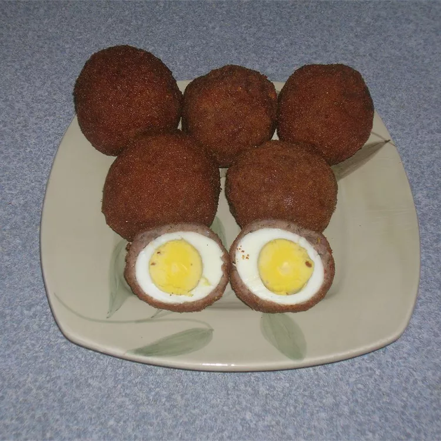

Scotch Eggs

These Scotch eggs make for a delicious and easy special occasion recipe for your family.
We serve ours on Christmas Eve over a bed of lettuce with sliced tomatoes and mustard for garnish.
Ingredients
- Egg
- Sausage
- Bread Crumbs
- Mustard
Instructions
- Boil, cool, and peel the eggs.
- Flatten the sausage, make patties, and wrap the patties around each egg.
- Lightly flour the sausage layer, then coat with the beaten egg. Roll in bread crumbs.
- Deep fry the sausage-covered eggs until they’re golden brown.